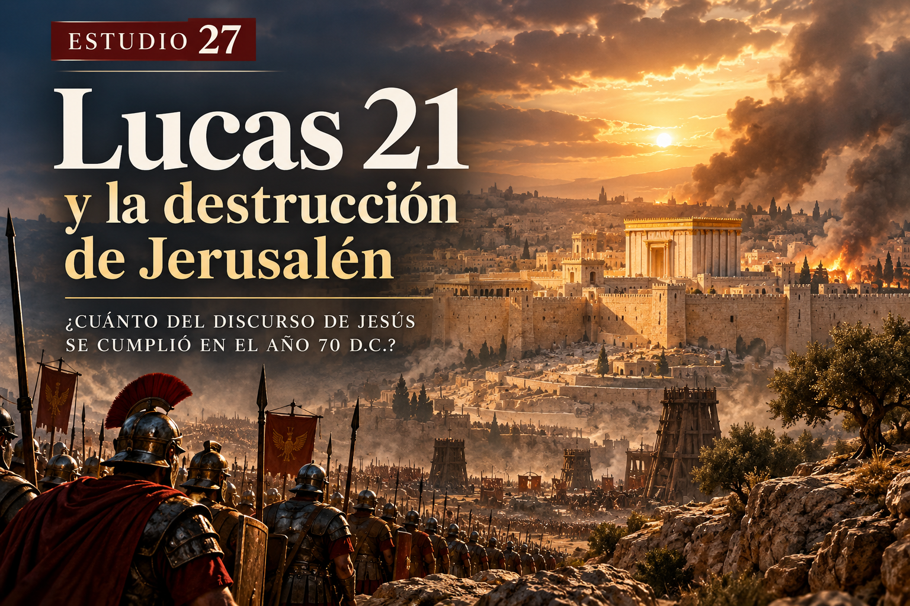
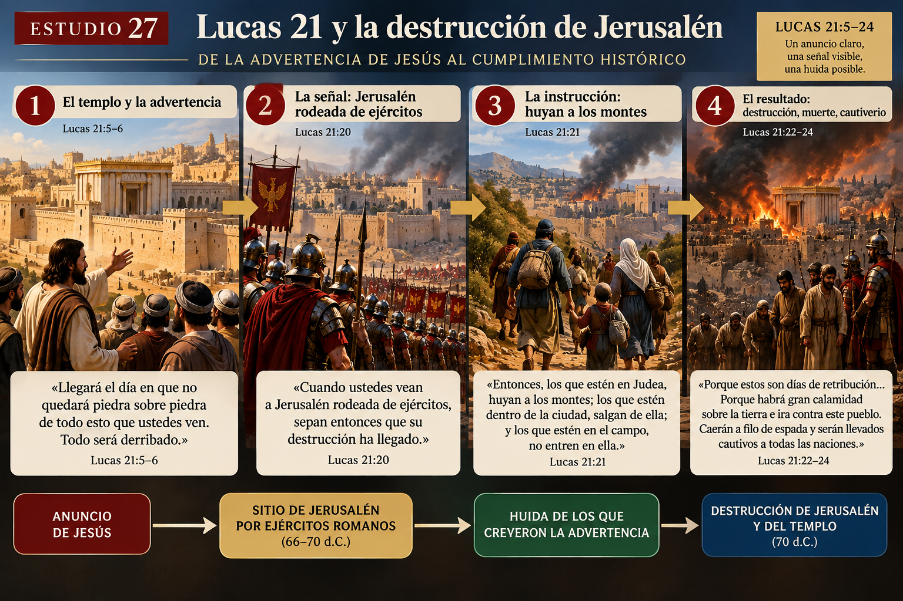
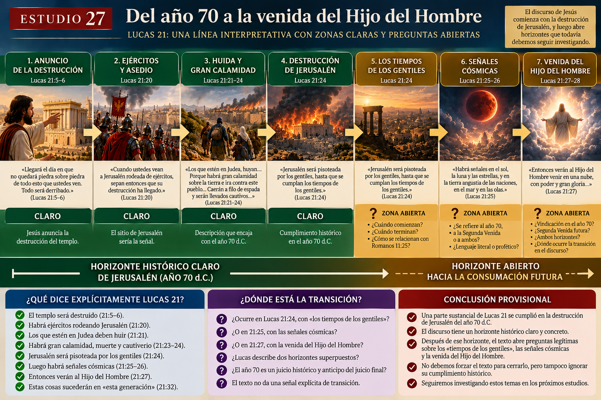
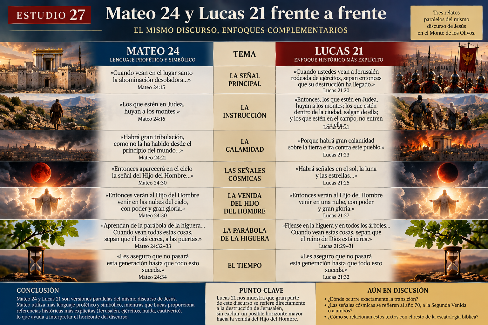
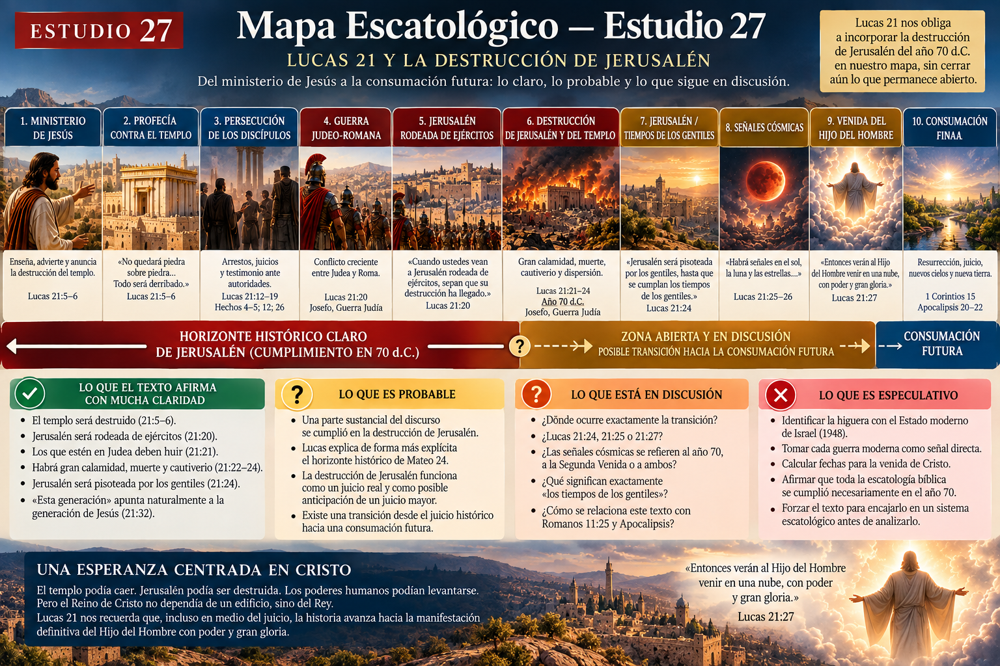

🟥 ESTUDIO 27
Lucas 21 y la destrucción de Jerusalén
¿Cuánto del discurso de Jesús se cumplió en el año 70 d.C.?
📖 Texto principal: Lucas 21:5–36
Textos paralelos: Mateo 24:1–44; Marcos 13
Tema central: La caída de Jerusalén como juicio histórico y su relación con la venida del Hijo del Hombre y la consumación futura.
🎯 Objetivo del estudio
En los estudios anteriores recorrimos Mateo 24 casi versículo por versículo. Ahora Lucas nos permite observar el mismo discurso desde otro ángulo.
Y Lucas contiene una frase decisiva:
«Cuando ustedes vean a Jerusalén rodeada de ejércitos, sepan entonces que su destrucción ha llegado.»
Lucas 21:20
Esto cambia mucho la discusión.
Porque algunas expresiones que en Mateo pueden parecer difíciles de identificar, en Lucas aparecen vinculadas explícitamente con Jerusalén, ejércitos, huida, cautiverio y dispersión entre las naciones.
No vamos a decidirlo antes de leer el texto.
1. 📖 El punto de partida: el templo
«Como algunos hablaban acerca del templo, de las hermosas piedras y de las ofrendas que lo adornaban, Jesús dijo: “Llegará el día en que no quedará piedra sobre piedra de todo esto que ustedes ven. Todo será derribado.”»
Lucas 21:5–6
El objeto inmediato de la profecía es inequívoco: el templo de Jerusalén.
🟢 Muy fuerte: Jesús anuncia la destrucción física del templo.
Los discípulos preguntan:
«Maestro, ¿cuándo sucederá esto? ¿Y cuál será la señal de que estas cosas están a punto de suceder?»
Lucas 21:7
Esto es importante porque Lucas formula la pregunta de manera ligeramente diferente a Mateo. Mateo 24:3 menciona cuándo sucederán «estas cosas», la señal de la venida de Jesús y la consumación del siglo. Lucas concentra la pregunta en: «¿Cuándo sucederá esto?»
Por eso debemos permitir que Lucas explique el discurso con su propio énfasis.
2. ⚠️ Antes de Jerusalén: falsos mesías, guerras y conmociones
«Tengan cuidado de no ser engañados… Cuando oigan hablar de guerras y revoluciones, no se alarmen, porque es necesario que estas cosas sucedan primero; pero el fin no será inmediatamente.»
Lucas 21:8–9
Esta última frase es especialmente importante: «El fin no será inmediatamente.»
Jesús no presenta cada guerra, terremoto o crisis como prueba automática de que el fin está llegando. Después menciona guerras, terremotos, hambres, epidemias y fenómenos aterradores.
Pero inmediatamente añade algo cronológicamente importante:
«Pero antes de todas estas cosas, los arrestarán y los perseguirán…»
Lucas 21:12
Los discípulos serían perseguidos. Serían llevados ante sinagogas, ante reyes, ante gobernadores, y algunos incluso morirían.
🟢 Muy fuerte: una parte importante de Lucas 21 está dirigida directamente a la generación de los discípulos.
De hecho, Hechos —escrito también por Lucas— narra precisamente persecuciones ante autoridades judías y gentiles.
3. 🏛️ La señal explícita: Jerusalén rodeada
«Cuando ustedes vean a Jerusalén rodeada de ejércitos, sepan entonces que su destrucción ha llegado.»
Lucas 21:20
Aquí casi no necesitamos reconstruir el símbolo. Jesús identifica: Jerusalén + ejércitos = proximidad de su devastación.
🟢 Muy fuerte.
Esto es especialmente significativo cuando lo comparamos con Mateo y Marcos.
Mateo 24:15
«Cuando vean en el lugar santo la abominación desoladora…»
Marcos 13:14
«Cuando vean la abominación desoladora donde no debe estar…»
Lucas 21:20
«Cuando vean a Jerusalén rodeada de ejércitos…»
Lucas parece ayudarnos a comprender el horizonte histórico de la advertencia.
🟡 Probable: Lucas presenta el sitio militar de Jerusalén como la manifestación histórica vinculada con aquello que Mateo y Marcos expresan mediante el lenguaje de la «abominación desoladora».
No debemos decir que las expresiones son necesariamente idénticas en cada detalle, pero la conexión contextual es muy fuerte.

4. 🏃 «Los que estén en Judea, huyan»
«Entonces, los que estén en Judea, huyan a los montes; los que estén dentro de la ciudad, salgan de ella; y los que estén en el campo, no entren en ella.»
Lucas 21:21
Observemos la geografía: Judea → Jerusalén → montes → campos.
Esto no suena inicialmente como una descripción abstracta del fin del universo. Son instrucciones prácticas para personas que pueden: ver el peligro → reconocerlo → huir.
🟢 Muy fuerte: la advertencia tiene un referente histórico y geográfico concreto.
Esto coincide directamente con Mateo 24:16: «Los que estén en Judea, huyan a los montes.»
Por tanto, interpretar toda esta sección exclusivamente como acontecimientos globales inmediatamente anteriores al fin encuentra una dificultad: Jesús está hablando específicamente de Judea y Jerusalén.
5. ⚖️ «Días de retribución»
«Porque estos son días de retribución, para que se cumplan todas las cosas que están escritas.»
Lucas 21:22
La destrucción de Jerusalén no aparece simplemente como un accidente militar. Lucas utiliza lenguaje profético de juicio.
Esto tiene abundantes antecedentes en el Antiguo Testamento. Jerusalén ya había experimentado anteriormente juicio mediante ejércitos extranjeros, especialmente con Babilonia.
Los profetas podían describir una invasión histórica como el día del Señor, es decir, una intervención judicial de Dios dentro de la historia.
🟢 Muy fuerte: Lucas interpreta la catástrofe de Jerusalén teológicamente como juicio.
🔴 Especulativo: concluir que esto significa que absolutamente todas las profecías escatológicas de la Biblia quedaron consumadas en el año 70. Lucas no dice eso.
6. 😢 «Gran calamidad sobre la tierra»
«¡Ay de las que estén embarazadas y de las que estén amamantando en aquellos días! Porque habrá gran calamidad sobre la tierra e ira contra este pueblo.»
Lucas 21:23
La expresión final es decisiva: «ira contra este pueblo». El contexto sigue concentrado en Jerusalén y Judea.
Luego Jesús describe las consecuencias:
«Caerán a filo de espada y serán llevados cautivos a todas las naciones.»
Lucas 21:24
Tenemos entonces: asedio → huida → espada → cautiverio → dispersión.
Esta descripción encaja notablemente con una catástrofe militar histórica. Josefo, escribiendo sobre la guerra judeo-romana, describe precisamente hambre, cautivos, esclavización, incendio del templo y destrucción de la ciudad. Después de la conquista, relata que Jerusalén fue demolida extensamente por los romanos.
🟢 Muy fuerte: Lucas 21:20–24 encuentra un cumplimiento histórico natural en los acontecimientos que culminaron con la destrucción de Jerusalén en el año 70 d.C.
7. 🏺 Un dato histórico sorprendente: los ejércitos realmente llegaron
La guerra judía contra Roma comenzó en el año 66 d.C.
Josefo relata que el ejército romano dirigido por Cestio Galo avanzó contra Jerusalén, llegó hasta la ciudad y atacó sectores de ella, pero posteriormente se retiró.
Más adelante Roma regresaría bajo Vespasiano y posteriormente Tito. Finalmente Jerusalén cayó en el año 70.
Josefo describe una ciudad devastada por guerra interna, hambre, violencia y asedio romano. Su descripción del hambre dentro de Jerusalén es especialmente terrible.
Después de la victoria romana, Josefo afirma que gran parte de la ciudad y el templo fueron demolidos.
8. 🌍 «Jerusalén será pisoteada por los gentiles»
«Jerusalén será pisoteada por los gentiles, hasta que se cumplan los tiempos de los gentiles.»
Lucas 21:24
Aquí aparece una palabra importante: ἄχρι — áchri — «hasta».
La frase parece introducir duración: Jerusalén pisoteada → durante un período → hasta…
Esto podría significar que Jesús ya está mirando más allá del momento inmediato de la destrucción.
🟢 Muy fuerte: Lucas contempla un período denominado «los tiempos de los gentiles».
❓ ¿Cuándo comienzan exactamente?
❓ ¿Cuándo terminan?
❓ ¿Se relacionan directamente con Romanos 11:25?
🟠 Disputado. No debemos resolver esas preguntas simplemente porque un sistema escatológico necesite una respuesta.
9. 🌑 Entonces cambia el lenguaje
«Habrá señales en el sol, la luna y las estrellas…»
Lucas 21:25
Y posteriormente:
«Entonces verán al Hijo del Hombre venir en una nube, con poder y gran gloria.»
Lucas 21:27
Aquí encontramos nuevamente el lenguaje que estudiamos en Mateo 24.
En el Antiguo Testamento, el oscurecimiento del sol, la luna y las estrellas puede utilizarse como lenguaje profético para describir la caída de naciones y poderes.
Por tanto, no podemos asumir automáticamente: sol + luna + estrellas = destrucción literal del cosmos.
Pero tampoco podemos asumir lo contrario: lenguaje profético = solamente año 70.
Debemos mirar especialmente la expresión: «Hijo del Hombre».
10. ☁️ Daniel 7 aparece nuevamente
Lucas dice: «Verán al Hijo del Hombre venir en una nube, con poder y gran gloria.»
Esto recuerda claramente Daniel 7:13–14. Allí el Hijo del Hombre viene con las nubes y recibe dominio, gloria, reino y autoridad sobre las naciones.
Como vimos anteriormente, en Daniel 7 el movimiento de la visión conduce al Hijo del Hombre hacia el Anciano de Días para recibir el reino.
Interpretación A — Vindicación y entronización
La «venida» representa la manifestación pública de la autoridad de Cristo mediante juicio y vindicación. Jerusalén cae y Jesús queda vindicado como el verdadero Mesías.
🟡 Contextualmente fuerte, especialmente por Daniel 7 y por la continuidad con Jerusalén.
Interpretación B — Segunda Venida
Jesús pasa de la destrucción histórica de Jerusalén a su regreso glorioso al final de la historia. La expresión «venir en una nube, con poder y gran gloria» puede naturalmente relacionarse con otros textos del NT sobre el regreso visible de Cristo.
🟡 También posee apoyo bíblico importante.
🟠 Disputado: determinar si Lucas 21:25–28 describe exclusivamente el juicio histórico del año 70, exclusivamente la Segunda Venida, o utiliza el primer acontecimiento como horizonte que conduce al segundo.
No necesitamos cerrarlo todavía.

11. 🌳 La parábola de la higuera
«Fíjense en la higuera y en todos los árboles. Cuando ustedes ven que ya brotan las hojas, saben por ustedes mismos que el verano está cerca.»
Lucas 21:29–30
Aquí Lucas añade algo que muchas veces se pasa por alto: «y todos los árboles».
Esto debilita considerablemente una interpretación popular según la cual: higuera = Israel moderno.
En la parábola, la lógica parece mucho más sencilla: cuando los árboles brotan, sabes que el verano está cerca; cuando vean estas cosas, sepan que el reino está cerca.
🟢 Muy fuerte: la parábola enseña reconocimiento de señales.
🔴 Especulativo: identificar automáticamente la higuera con la fundación del Estado moderno de Israel en 1948. El texto no establece esa conexión.
12. ⏳ «Esta generación no pasará»
«Les aseguro que no pasará esta generación hasta que todo esto suceda.»
Lucas 21:32
Pero ahora tenemos información adicional. Antes de pronunciarla, Jesús ha hablado explícitamente de Jerusalén, ejércitos, Judea, huida, espada, cautiverio y juicio sobre «este pueblo».
Esto fortalece considerablemente la interpretación estudiada anteriormente:
🟢 Muy fuerte: «esta generación» conserva naturalmente su sentido normal de la generación contemporánea de Jesús.
Y efectivamente, Jerusalén fue destruida aproximadamente cuatro décadas después.
Esto no demuestra que cada detalle de toda la escatología bíblica se cumpliera entonces. Pero sí significa que no podemos separar fácilmente Lucas 21 de la catástrofe del año 70.
13. 🔍 Mateo 24 y Lucas 21 frente a frente
| Mateo 24 | Lucas 21 |
|---|---|
| Abominación desoladora | Jerusalén rodeada de ejércitos |
| Los que estén en Judea huyan | Los que estén en Judea huyan |
| Gran tribulación | Gran calamidad e ira |
| Días acortados | Espada y cautiverio |
| Sol, luna y estrellas | Sol, luna y estrellas |
| Hijo del Hombre viniendo | Hijo del Hombre viniendo |
| Esta generación | Esta generación |
La correspondencia es demasiado estrecha para tratar ambos capítulos como discursos completamente diferentes.
🟢 Muy fuerte: Mateo 24, Marcos 13 y Lucas 21 transmiten versiones paralelas del mismo discurso.
Y Lucas proporciona algunas de las claves históricas más explícitas.

14. 🧭 Las principales interpretaciones
A. Lectura futurista estricta
Considera que la mayor parte del discurso describe acontecimientos todavía futuros, generalmente asociados con una gran tribulación inmediatamente anterior al regreso de Cristo.
Fortaleza: toma seriamente el lenguaje cósmico y la venida del Hijo del Hombre.
Dificultad: debe explicar por qué Lucas habla tan concretamente de Jerusalén, Judea, ejércitos, cautiverio y «esta generación».
🟠 Disputado.
B. Lectura preterista
Considera que gran parte —o prácticamente todo, según la versión— se cumplió en la destrucción de Jerusalén.
Fortaleza: encaja muy bien con Lucas 21:20–24 y «esta generación».
Dificultad: las versiones más radicales deben explicar otros textos del NT que parecen mantener una esperanza futura de resurrección, juicio y regreso de Cristo.
🟡 Fuerte para Lucas 21:20–24.
🔴 Mucho más difícil de demostrar si se afirma que toda la escatología bíblica quedó consumada en el año 70.
C. Lectura de doble horizonte
Sostiene que Jesús comienza hablando de la destrucción de Jerusalén y que el discurso finalmente abre el horizonte hacia la consumación futura. La caída de Jerusalén funciona como juicio histórico real y, posiblemente, como anticipación del juicio final.
Fortaleza: permite tomar seriamente tanto el contexto histórico como los textos futuros del NT.
Dificultad: debemos identificar dónde ocurre exactamente la transición.
¿Lucas 21:24? ¿21:25? ¿21:27?
❓ El texto no coloca un cartel diciendo: «A partir de aquí hablamos del fin del mundo».
🟡 Probable como estructura general, aunque el punto exacto de transición permanece discutido.
15. ✝️ ¿Qué estaba diciendo Jesús realmente?
Algo queda muy claro. Jesús no estaba dando a sus discípulos simplemente un calendario para satisfacer curiosidad profética.
Les estaba preparando para una crisis histórica terrible. Jerusalén sería sitiada. El templo sería destruido. Muchos morirían. Otros serían llevados cautivos. Pero Jesús les había advertido previamente.
Y en medio de ese juicio aparece una afirmación profundamente cristológica:
«Entonces verán al Hijo del Hombre venir… con poder y gran gloria.»
El templo podía caer. Jerusalén podía caer. Los poderes humanos podían levantarse. Pero el Reino de Cristo no dependía de la supervivencia del templo.
El centro de la esperanza ya no era un edificio. Era el Rey.
16. 🧩 ¿Qué podemos afirmar hasta ahora?
🟢 Muy fuerte
La profecía comienza con la destrucción del templo de Jerusalén.
Lucas identifica explícitamente el acercamiento de ejércitos contra Jerusalén.
Jesús ordena a quienes estén en Judea huir.
Lucas anuncia espada, cautiverio y dispersión.
La destrucción de Jerusalén en el año 70 d.C. constituye un cumplimiento histórico claro de Lucas 21:20–24.
«Esta generación» encaja naturalmente con la generación contemporánea de Jesús.
🟡 Probable
La caída de Jerusalén constituye el horizonte dominante de una gran parte del discurso.
Lucas ayuda a interpretar el lenguaje más simbólico de Mateo y Marcos.
Existe probablemente una apertura desde el juicio histórico sobre Jerusalén hacia una consumación escatológica mayor.
🟠 Disputado
Dónde ocurre exactamente esa transición.
Si Lucas 21:25–28 describe el año 70, la Segunda Venida o ambos mediante distintos horizontes.
Qué significa exactamente «los tiempos de los gentiles».
Cómo relacionar este texto con Romanos 11 y Apocalipsis.
🔴 Especulativo
Convertir cada guerra moderna en señal directa de Lucas 21.
Identificar la higuera automáticamente con Israel en 1948.
Calcular fechas para el regreso de Cristo.
Afirmar que toda la escatología bíblica quedó necesariamente consumada en el año 70.
🗺️ Mapa Escatológico — Actualización 27
Ministerio de Jesús ↓
Profecía contra el templo ↓
Persecución de los discípulos ↓
Guerra judeo-romana ↓
Jerusalén rodeada por ejércitos ↓
Destrucción de Jerusalén y del templo — 70 d.C. 🟢 ↓
Jerusalén / tiempos de los gentiles 🟠 ↓
Señales cósmicas / Hijo del Hombre 🟠 ↓
❓ Relación exacta con la Segunda Venida ↓
Consumación final, resurrección y juicio 🟢 como esperanza general del NT
Algo importante ha cambiado en nuestro mapa: el año 70 ya no puede tratarse como un detalle secundario.
Lucas 21 obliga a incorporarlo explícitamente. Pero tampoco vamos a utilizarlo para rellenar automáticamente todo lo que todavía permanece abierto.

💡 Conclusión
Lucas 21 nos proporciona una de las claves más importantes para interpretar el discurso del Monte de los Olivos.
Cuando Jesús habló de una terrible crisis sobre Judea, no estaba necesariamente describiendo únicamente acontecimientos miles de años posteriores.
«Cuando ustedes vean a Jerusalén rodeada de ejércitos…»
Y Jerusalén efectivamente fue rodeada. El templo fue destruido. La población sufrió guerra, hambre, muerte y cautiverio. Las fuentes históricas antiguas describen la devastación de la ciudad y del templo.
Por eso, la interpretación contextual más fuerte reconoce que una parte sustancial de Lucas 21 se refiere directamente al juicio histórico sobre Jerusalén que culminó en el año 70 d.C.
Sin embargo, el discurso abre preguntas que todavía no debemos cerrar:
❓ ¿Dónde termina el horizonte de Jerusalén?
❓ ¿Dónde comienza, si comienza dentro del discurso, el horizonte de la Segunda Venida?
❓ ¿Qué son exactamente los «tiempos de los gentiles»?
❓ ¿Cómo debemos entender finalmente la venida del Hijo del Hombre?
Estas preguntas seguirán abiertas mientras avancemos.
Porque el objetivo no es hacer que Lucas encaje en un sistema. Es permitir que Lucas nos ayude a construir el sistema desde el texto.